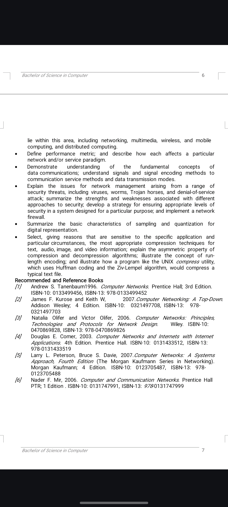

|
Networking
Detailed Definition of Networking
Networking: refers to two primary concepts:
-
Social and Professional Networking:
- Definition:
The process of interacting with others to exchange information and develop professional or social contacts1.
Purpose: It helps individuals expand their circles of acquaintances, find job opportunities, and stay updated with industry trends2. Professionals often network at events like trade shows, seminars, and conferences2.
- Benefits:
Building relationships that can lead to future business or employment opportunities, sharing valuable information, and supporting others in their professional journeys2.
- Computer Networking:
-
Purpose:
It enables the sharing of resources and information between computers, enhancing communication and collaboration.
- Components:
Includes hardware (like routers, switches, and cables) and software (such as network protocols and operating systems) that facilitate data exchange.
- Types:
Various types of networks include Local Area Networks (LANs), Wide Area Networks (WANs), and wireless networks, each serving different scales and purposes.
Networking, whether social or technical, plays a crucial role in modern society by fostering connections and enabling efficient communication.
|

download pdf
|